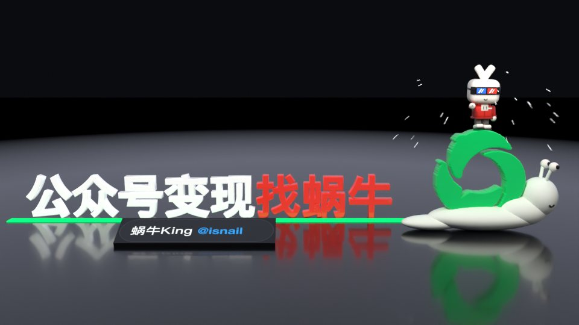

29 秒 3D 自我介紹片（第 3 版）。第一、三幕唔變；第二幕改成鏡頭升到半空望落成篇置頂文章，304万 由佢嘅互動列升起變成大字，一路跳數，一眼睇到「呢篇文章 → 304万 阅读」；結尾加多一幕：公众号 logo 跌落嚟變成蝸牛殼，蝸牛爬過嘅地方逐隻字彈出「公众号变现找蜗牛」。
之前計數器同文章分開咗，觀眾唔知 304万 係邊篇。而家鏡頭望落成篇 post，封面、標題、藍框同大字 304万 喺同一個畫面，數字由佢自己個互動列升起。
佢叫蜗牛，公众号個 logo 又啱啱係一個漩渦，好似蝸牛殼。logo 一跌落嚟就變成蝸牛，「公众号」同「蜗牛」一個畫面講晒，好易記。
蝸牛會留低痕跡，佢爬過嘅地方逐隻字彈出「公众号变现找蜗牛」。每隻字踩一個八分音符，連起嚟係一段旋律，聽落都記得。
開場佢由頭像彈出嚟，第三幕佢壓返入封面，結尾佢再由封面彈出嚟去騎蝸牛，最後指住觀眾。
第一幕同第三幕照上一版，唔使重新批；以上全部係真 3D 預覽（半解像度、低取樣），唔係最終質素。